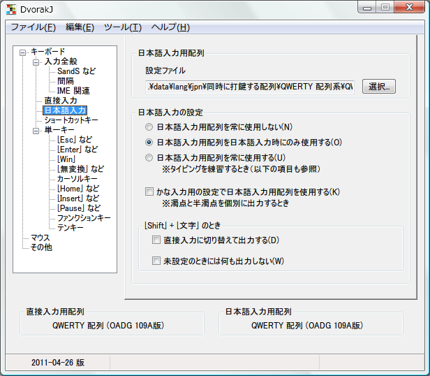
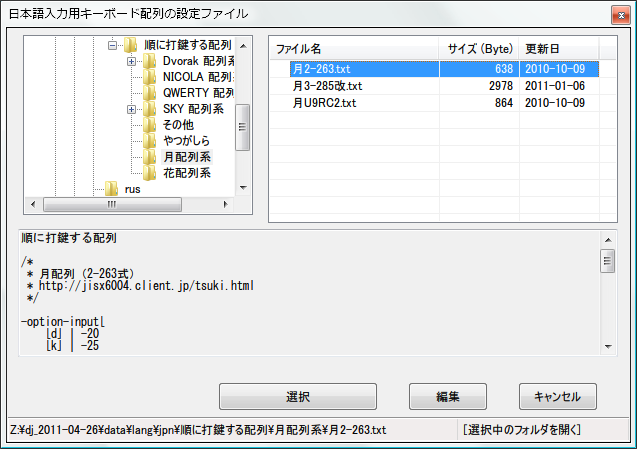
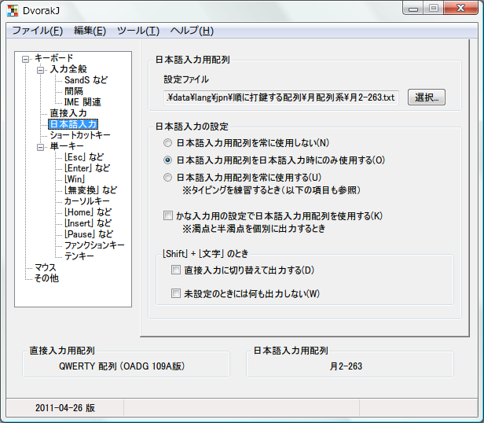

DvorakJ:チュートリアル:日本語入力用配列を変更する
はじめに
日本語入力用のキー配列を使用する際の、基本的な機能を説明します。
実装済みのキー配列を使用する
初期設定では、109 キーボード向けの QWERTY 配列を使用しています。

DvorakJ には、日本語入力用配列として、多数のキー配列の設定ファイルを収録しています。 まず、キーを順に打鍵する配列の一つ、中指前置シフト新JIS「月配列」（月2-263）を使用してみます。
例題9 「月配列」（月2-263） を使用する。
「日本語入力」の「日本語入力用配列」の項目から、キー配列の設定ファイルを選択します。 ここでは、.\data\lang\jpn\順に打鍵する配列\月配列系\月2-263.txt を選択してください。

すると、「日本語入力」項目中の「日本語入力用配列」の文字列と、設定画面左下の「日本語入力用配列」の文字列が変更されます。 これで、月配列（月2-263） を使用できます。

さて、上記の設定ファイルのパスの中に「順に打鍵する配列」という文字列が現れていますので、日本語入力用配列のキー配列の分類について説明しましょう。 DvorakJ では、収録している設定ファイルをつぎの3つに大別しています。
- 順に打鍵する配列
- 同時に打鍵する配列
- 順にも同時にも打鍵する配列
順に見ていきます。 順に打鍵する配列とは、S A のように、キーを連続して打鍵することで文字を出力する配列です。 一例は月配列（月2-263）です。 同時に打鍵する配列は、下駄配列のように、キーを複数個同時に打鍵して文字を出力する配列です。 ただ、DvorakJ の実際の動作では、原則として、キーを同時に打鍵しているかを判定していません。 つまり、個別のキーが実際に押し下げられているかどうかを、原則として、判定しません。 そうではなくて、一定時間内にキーを打鍵したか（押し下げたか）どうかを判定しています。 名称から分かるかもしれませんが、順に打鍵する配列と同時に打鍵する配列の特徴を併せ持つのが順にも同時にも打鍵する配列です。 DvorakJ で実装しているキー配列は一打鍵ローマ字入力「ローナ」と。 市式仮配列です。
このような3分類を理解するために、いくつかのキー配列に触れてみましょう。
例題10 NICOLA 配列を使用する。
親指シフトとも呼ばれる NICOLA 配列には、ピリオドとコンマの位置が異なる二つの版、すなわち NICOLA 配列規格書版とNICOLA配列キーボード 日本工業規格(JIS)化要望書版があるようです。 NICOLA 配列は、キーを二つ同時に打鍵しますので、同時に打鍵する配列として分類しています。 設定ファイルは .\data\lang\jpn\同時に打鍵する配列\NICOLA 配列系 以下にあります。
同時に打鍵する配列を使用するときは、「キーボード：入力全般：間隔」の「文字の表示を何ミリ秒待機するか」という設定を適宜変更してください。 この時間が短ければ短いほど、同時に打鍵したと判定されにくくなります。 この時間を長く設定すると、同時に打鍵したものと判定されやすくなってしまいます。 パソコンやキーボードの性能を考慮して、適切な値に設定してください。
例題11 DvorakJP を使用する。
DvorakJP とは、Dvorak 配列をローマ字入力として使用しやすく改変したものです。 一例を挙げると、Dvorak 配列では K U よりも C U の方が入力しやすいので、後者で「く」を出力できます。 DvorakJP は順に打鍵する配列に該当し、その中でもDvorak 配列の派生として位置づけられるでしょう。 設定ファイルは .\data\lang\jpn\順に打鍵する配列\Dvorak 配列系\DvorakJP\ 以下にあります。
例題12 Perky配列 を使用する。
Perky配列とは、Perky（パーキー）という自作キーボードを公表している平井さんが、一般のキーボード向けに公開したキー配列です。 平井さんのウェブサイトを見れば分かるように、Perkyとは、キーを複数個同時に打鍵して、さまざまな文字列を出力できるキーボードです。 そのキーボードを模したのがPerky配列であることを考慮して、Perky配列を同時に打鍵する配列として分類しました。 設定ファイルは .\data\lang\jpn\同時に打鍵する配列\その他\Perky配列.txt です。
かな入力としてキー配列を使用する
DvorakJ の挙動はローマ字入力を想定したものになっています。 たとえば、設定ファイルにかと記述すると、DvorakJ は K A のキーを出力します。
かな入力としてキー配列を使用するには、ローマ字入力とは異なる設定が必要です。 「日本語入力」の「日本語入力の設定」で、「かな入力用の設定で日本語入力用配列を使用する」を選択します。 そうすることで、かを表示するときに、ローマ字入力用の K A のキーではなく、かな入力用の T （かな入力で「か」を出力するキーです）を出力します。 濁点や半濁点を単独で出力する場合は、ローマ字入力ではなく、かな入力としてキー配列を使用してください。
キー配列を自作し、それを使用する
別のページで説明します。
タイピング練習ソフトで、選択した日本語入力用配列を使用する
タイピングを練習するソフトウェアの中には、タイプウェル国語Ｒやタイプウェル国語Ｋのように、IME を無効にした状態で、キーを入力するよう求めるものがあります。
そのようなソフトウェアにおいて、選択した日本語入力用配列を使用するならば、IME の状態にかかわらず、日本語入力用配列を使用しなければなりません。 言い換えると、常に日本語入力用配列を使用するということです。 これを実現するには、「日本語入力」の「日本語入力の設定」で、「日本語入力用配列を常に使用する」を選択します。
かな入力としてタイピングを練習したいときには、先述の「かな入力としてキー配列を使用する」の説明に従い、設定してください。
おわりに
日本語入力用のキー配列を使用するにあたり、ごく基本的な機能を説明しました。
つぎのページでは、ショートカットキーの挙動を変更します。